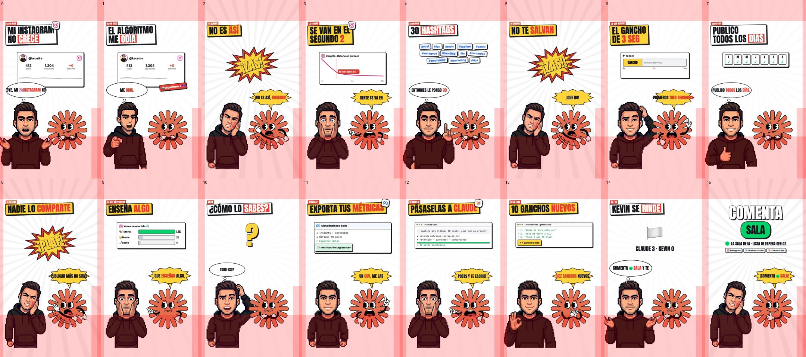
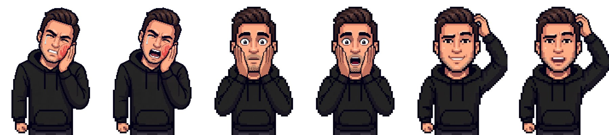

Claude me dijo por qué no crezco
Sketch de cómic: tú repites los mitos de Instagram y la mascota de Claude te corrige a cachetadas… con tus métricas reales
Segunda versión del formato "Claude te cachetea". Tu muñequito pixel dice tres mitos ("el algoritmo me odia", "le pongo 30 hashtags", "publico todos los días") y la mascota de Claude lo corrige con un ¡ZAS! en cada uno. Al final explica cómo lo sabe y los recursos se ven en pantalla: exportar métricas en Meta Business Suite, pasárselas a Claude Code y salir con 10 ganchos nuevos. Cada vez que alguien nombra una marca aparece su logo real.
Herramientas
Claude Code
Escribe el sketch, analiza tus métricas, arma las escenas, sincroniza las bocas y renderiza.
Instalar Claude Code →Meta Business Suite
De aquí sacas tus métricas reales de Instagram en un CSV (Insights → Contenido → Exportar).
Abrir Business Suite →Higgsfield
Las poses nuevas de tu muñequito (Nano Banana), tu voz clonada (Seed Audio) y la voz de la mascota (ElevenLabs v4).
Abrir Higgsfield →La Sala de IA
Aquí te enseñamos a hacer esto con tu negocio. Lista de espera de la Gen 02.
Unirme a La Sala →Repos para descargar
remotion-dev/remotion
El motor con el que armamos este video.
npx create-video@latest
SYSTRAN/faster-whisper
Transcribe las voces con el tiempo de cada palabra para los globos y para enganchar las escenas.
pip install faster-whisper
simple-icons/simple-icons
Los logos reales (Instagram, Meta, Claude…) en SVG que aparecen cuando se nombra cada marca.
npm install simple-icons
01Saca tus métricas reales (el contenido del sketch)
Lo que dice Claude en el video sale de tus datos. En Meta Business Suite: Insights → Contenido → últimos 30 posts → Exportar (CSV). Luego pásaselo a Claude Code.
Te paso mis métricas de Instagram: [ruta/metricas-instagram.csv] Analiza mis últimos 30 posts y dime, sin suavizarlo: 1. En qué segundo se va la gente de mis reels (retención). 2. Qué tipo de post se comparte y se guarda más, y cuál no le importa a nadie. 3. Tres "mitos" que estoy creyendo según mis datos (ej. que publicar más me hace crecer). 4. 10 ganchos nuevos para mis próximos reels, en mi forma de hablar. Para quién creo contenido: [TU AUDIENCIA]
02Convierte el análisis en el sketch
Cada mito es un golpe: tú lo dices, Claude te cachetea y lo corrige con el dato. Al final Claude cuenta cómo lo supo (esos son los recursos que salen en pantalla).

Con ese análisis escribe un sketch de ~40 s entre YO y CLAUDE (la mascota):
- YO digo un mito → CLAUDE me grita "¡NO ES ASÍ!" (cachetada) y lo corrige con el dato. Tres veces.
- YO pregunto "¿y tú cómo sabes todo eso?" → CLAUDE explica los recursos en una frase: exporté métricas en Meta Business Suite, me las pasaste en Claude Code, revisé 30 posts, te escribí 10 ganchos.
- Cierre: YO me rindo y digo "comenta [PALABRA]"; CLAUDE remata.
Sepáralo en bloques YO: / CLAUDE:, frases cortas, yo hablo relajado ("oye", "o sea"), Claude grita con humor.03Poses de reacción de tu muñequito
Si ya tienes tu muñequito pixel (receta #001), solo te faltan las poses de reacción. Pasa tu pose base como imagen 1 y una pose de referencia como imagen 2.

Image 1 is the character (pixel art, [DESCRIBE TU ROPA Y PELO]). Image 2 is ONLY a pose reference. Redraw the character from image 1 in the exact same pixel-art style, same proportions, same clothes, same framing (waist up, centered, same size) — in this pose: [POSE]. Plain pure white background, no text, no other characters. Poses: just got slapped, head tilted, one hand holding a red cheek with a red handprint, eyes squeezed with a tear, mouth closed in a grimace · shocked, both hands on his cheeks, eyes wide open, mouth closed · confused, scratching the back of the head, one eyebrow raised, awkward smile, mouth closed.
Exact same image, identical pixel art, identical pose, framing, colors and every pixel — ONLY change the mouth: open as if talking, showing dark mouth interior. Nothing else changes. Plain white background.
04Las dos voces (sin filtrar la tuya)
Tu parte con tu voz clonada (Seed Audio). La de Claude con ElevenLabs v4 y la etiqueta [shouting]. Ojo: tu voz clonada ya sale limpia; si le pasas filtros de ruido suena "enlatada". Solo se cortan las pausas.
Tengo los audios por bloque en aud/: k1.wav, c1.mp3, k2.wav, c2.mp3… (k = yo, c = Claude). 1. A mi voz NO le pongas reducción de ruido ni compresor (ya viene limpia): solo un highpass suave. 2. A la de Claude sí: limpieza ligera y súbele el tono x1.16 (asetrate) para que suene a caricatura. 3. En cada bloque deja las pausas internas en máximo 0.09 s. 4. Pégalos en orden con 0.06 s entre bloques en public/voz.wav a -16 LUFS. 5. Transcribe con faster-whisper (tiempo por palabra) y guarda quién habla en cada tramo, y por fotograma si la boca de cada uno va abierta o cerrada.
05Logos reales y recursos en pantalla
Esto es lo que lo hace ver premium: cuando alguien dice Instagram, Meta o Claude, sale el logo real pegado al título y dentro del globo junto a la palabra. Y cuando Claude explica cómo lo hizo, cada recurso tiene su tarjeta.
Usa los SVG de simple-icons en public/logos/ (instagram, meta, claude…). - En los globos: si una palabra es una marca, pon su logo a la izquierda de la palabra, del mismo alto que el texto. - En el título de la escena donde se nombra la marca: una pegatina blanca con el logo en la esquina superior derecha, que entra rebotando. - Escenas de recursos: tarjeta de Meta Business Suite (Insights › Contenido › Exportar → chip "metricas-instagram.csv"), ventana de Claude Code con el prompt escribiéndose y barra de progreso, y la lista de ganchos con "+7 más". - El cierre lleva píldoras con el logo de cada herramienta usada.
06Pídele a Claude que arme el cómic
Igual que en la receta #002, ahora con tarjetas de datos (curva de retención, barras de compartidos) y respetando la zona segura de Reels. En el kit está el código completo de este video.
Arma en Remotion (1080x1920, 30 fps) el sketch de cómic con public/voz.wav, los tiempos por palabra y los sprites public/yo/[pose]_c|_o.png y public/claude/[pose]_c|_o.png. Estilo: fondo blanco con rayos que giran; arriba una etiqueta (KEVIN DICE / CLAUDE / RECURSO 1…) y un título en Anton dentro de una caja con borde negro grueso y sombra dura (blanca cuando hablo yo, amarilla cuando habla Claude, palabra clave en rojo); en medio, una tarjeta por escena (perfil de Instagram sin crecer, curva de retención que cae en el segundo 2, nube de hashtags, barra del gancho de 3 s, calendario de 7 días, barras de compartidos, recursos); abajo yo a la izquierda y Claude a la derecha. En cada cachetada: ¡ZAS! amarillo y rojo, sacudida de pantalla y sonido de impacto, y yo con la pose del cachete rojo. Globos de 1 a 4 palabras en mayúsculas: nube blanca para mí, explosión amarilla para Claude, con los espacios FUERA de los bloques que no se parten para que el texto no se salga. Zona segura de Reels: nada importante en los 220 px de arriba, los 450 de abajo, los 35 de los lados ni en la columna de 100 px de la derecha desde y=1160. Renderiza primero un fotograma por escena con la zona segura marcada en rojo, y luego el video a -14 LUFS.
Descargas
Kit del sketch
El proyecto de Remotion de este video (escenas, globos con logos, tarjetas, sonidos, logos y la mascota de Claude) + audio.py para armar las voces. Pon tus sprites y tus audios y renderiza.